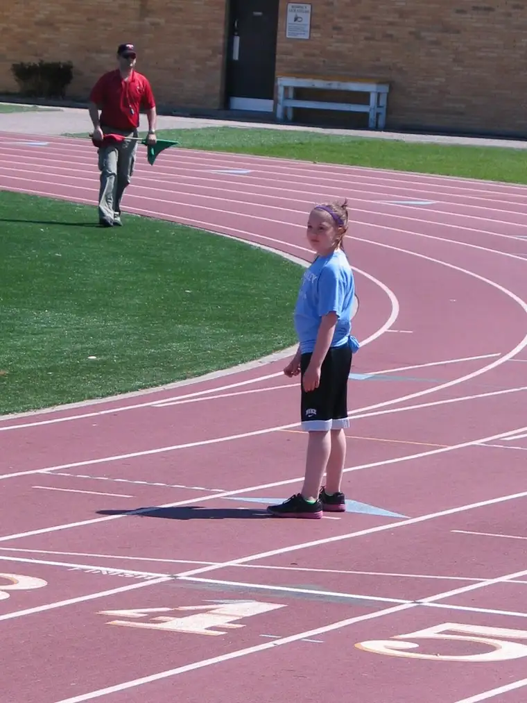
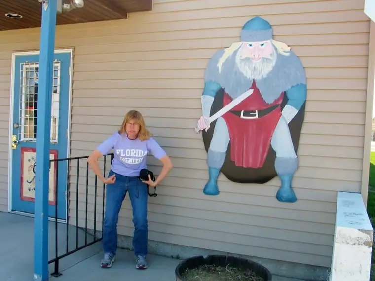
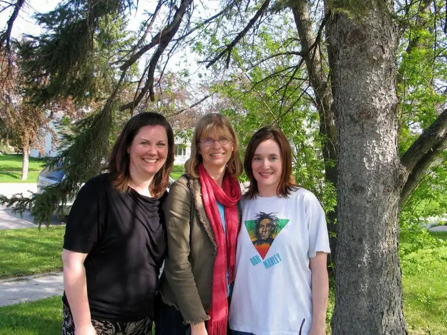

 |
||
| Relay girl watching for the baton |
{kind=link}
 |
| Jean and Viking (which is which?) |
{kind=link}
Mini #2: A couple days later, my author friend Jean Patrick arrived from South Dakota, just in time for us to catch lunch at Nichole’s Fine Pastry in Fargo in celebration of her having completed her 50th year of life. From there, we set off for Thief River Falls, Minnesota, to take part in a Young Author Conference. Little did we know the Vikings Sword Museum awaited us in a small midway town. Here, Jean puts on her best sword-bearing-Viking face, proving she’s ready for anything, even her brand-new A.A.R.P. card (Jean, you can get me back in a few years!).
 |
| Mary Aalgaard, Jean Patrick, Roxi Marley |
{kind=link}
Mini #3: The conference, which involved students in grades 4-8 who are interested in writing, was a wonderful success. There were about 18 presenters from the region, including our trio here (my pal Mary from Play off the Page, Jean and Moi). I’d changed into my Bob Marley shirt and jeans by the time this photo was snapped by the owner of Gemini Java, a little coffee shop on a corner street in TRF. We sat for an hour on a wooden park bench there sipping iced coffees and chatting before heading back to our respective Minnesota, North Dakota and South Dakota bases.
Mini #4: This weekend, our daughters performed in their spring piano recital. Here they are with their teacher, Gretchen. I always know summer is near when the piano recital is over. It’s been hard fitting in lessons this year, working around dance, track and basketball, but it’s always lovely hearing the results.
{kind=link}
{kind=link}
{kind=link}
Mini #5: And I can’t go without introducing you to poet extraordinaire Brod Bagert of New Orleans, the keynote speaker at the above-mentioned conference. I turned on the video camera during his presentation on “how to write your worst” and caught this very cool moment when he was speaking with an American Sign Language interpreter next to him. Notice how their movements create a sort of visual poem about midway through, totally spontaneously: